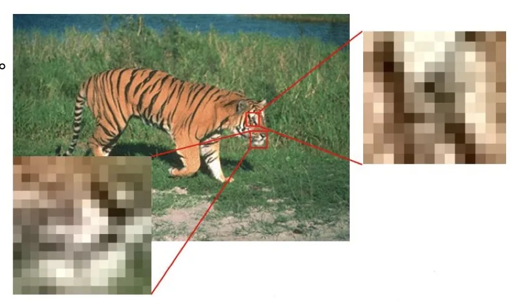
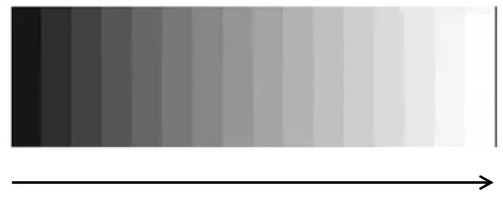
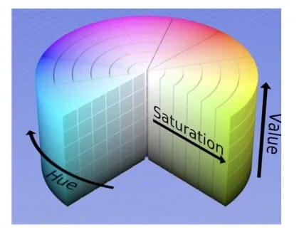
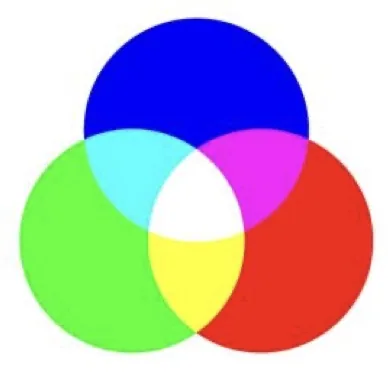
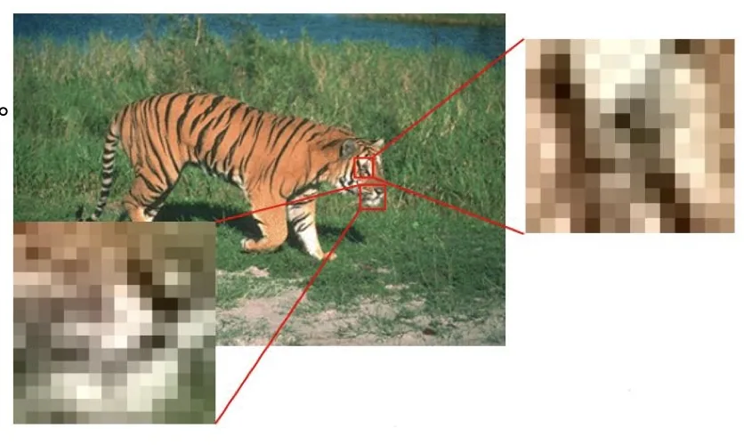

计算机视觉 · 第 2 章 图像处理基础
2.1 计算机中的数字图像
这一节先回答一个最基础的问题：图像在计算机里到底长什么样。答案是一串有位置、有幅值的像素，写成数学形式就是一个二维函数 f(x, y)。课件沿「数字图像与像素 → 灰度图像 → 彩色图像与颜色模型 → 采样与量化」的顺序展开，把像素的两种表示方式（单值、多值）和颜色模型的适用场合说清楚，最后留下一个接口：连续图像是怎么变成数字图像的。
1. 数字图像与像素
计算机里的图像不是一幅连续的画，而是由有限数量的元素组成的集合：每个元素都拥有一个特定的位置和一个特定的幅值，这样的元素称为像素（pixel）。位置和幅值这两件事，正好对应一个二维函数：
把图像记作 f(x, y)，其中 (x, y) 是空间坐标，f(x, y) 是点 (x, y) 处的幅值。坐标是二维的，说明图像是平面上的量；幅值是该点的取值，在灰度图像里就是那一点的明暗程度。区分不同的图像类型，关键只在于「一个像素用几个值表示」：灰度图像中每个像素只用一个值表示，彩色图像中每个像素用多个值表示。

这个定义看上去很朴素，却决定了后面所有的操作方式：既然图像是一个有限元素的集合，处理图像就只能是逐点、逐邻域地对这些幅值做运算；本章后面的采样、量化、滤波，处理的都是同一组 f(x, y) 的取值。
2. 灰度图像：一个像素一个值
灰度图像（grayscale image）是每个像素只有一个采样颜色的图像。它的幅值取在一维的灰度轴上，实践中通常分成 256 个灰度等级：255 代表全白，0 代表全黑，中间的值对应从暗到亮的不同深浅。
为什么是 256 级？因为一个像素的灰度值正好用一个字节（8 位）就能放下，取值范围 0 到 255，既够表现明暗过渡，存取时又整齐。这也解释了灰度图像与黑白图像的差别：后者一个像素只区分黑与白两种状态，而灰度图像保留了一整条明暗连续的刻度，因此能表达轮廓的过渡和表面的起伏。

3. 彩色图像与常用颜色模型
彩色图像里，每个像素要用多个值表示，具体用几个值、每个值是什么含义，由颜色模型决定。课件给出了三种最常用的模型：RGB、CMYK 与 HSV，它们的差别主要在于「为谁服务」——给机器、给印刷机，还是给人的眼睛。
RGB 颜色模型是最典型、最常用的三基色模型，它把颜色表示成红（Red）、绿（Green）、蓝（Blue）三个分量的组合。这个模型之所以流行，是因为设备就长这样：电视、摄像机、彩色扫描仪都是根据 RGB 模型工作的，它们的成像或显示直接建立在三基色的混合之上。但它的短处也很明显——不直观，不符合人对颜色的认知：即使给出三个分量的数值，人也很难立刻判断那是什么颜色。

HSV 颜色模型换了一套描述方式：H 是色调（Hue）、S 是饱和度（Saturation）、V 是亮度值（Value），它与人类对颜色的感知更接近。「偏红还是偏蓝」「鲜艳还是灰暗」「明亮还是深暗」，这三句日常描述恰好各对应一个分量，所以需要按人的直觉调色时用 HSV 会顺手得多。
CMYK 颜色模型则主要用于彩色打印。它由青（Cyan）、品红（Magenta）、黄（Yellow）、黑（Black）四种油墨构成，描述的是纸张上油墨叠印的结果，而不是屏幕上光线的混合。正因为它是为印刷输出设计的，课件对它的另一句说明是「图像处理中几乎不用」——图像处理面对的主要是屏幕上的光与采集到的信号，CMYK 的用武之地留在输出环节。
同一幅彩色图像可以同时用这几个模型描述，只是坐标不同。第 6 张把一幅 RGB 图像拆成了 R、G、B 三个分量来看：所谓「一个像素用多个值表示」，实际上就是每个分量各自构成一层单通道的图像，每个通道上的取值仍然是一个灰度值。这一点很重要，因为它意味着本章后面讲的滤波、卷积，都可以先在一个个通道上分别做，再合起来看。

4. 从连续到离散：采样与量化
到此为止讲的都是「数字图像长什么样」，还剩一个更靠前的问题：它为什么是数字的。传感器获取的图像其实是平面上的连续函数——光强随位置连续变化，坐标和幅值都没有最小刻度。要产生一幅数字图像，就必须把这种连续的感知数据转换为数字形式，这包括采样（Sampling）和量化（Quantization）两个基本步骤。
两个步骤的分工可以用前面的 f(x, y) 一句话点明：采样管的是自变量 (x, y)，量化管的是函数值 f(x, y)。前者决定图像上有多少个像素，后者决定每个像素能取多少个不同的值。也就是说，本节前面反复出现的「像素」「灰度等级」这两个词，正是这两个步骤的产物——下一节会把它们各自展开。

本节小结
- 数字图像由有限数量的元素组成，每个元素有特定的位置和幅值，这些元素称为像素；用二维函数表示即 f(x, y)，(x, y) 是空间坐标，f(x, y) 是点 (x, y) 的幅值。
- 灰度图像每个像素只用一个值表示，通常有 256 个灰度等级，255 代表全白、0 代表全黑；彩色图像每个像素用多个值表示，这些值按颜色模型组织。
- 三种常用颜色模型各有分工：RGB 是最典型的三基色模型，电视、摄像机、彩色扫描仪都按它工作，但不直观；HSV 用色调、饱和度、亮度值描述，更接近人的颜色感知；CMYK 主要用于彩色打印。
- 彩色像素的「多个值」可以看成各分量通道上的灰度值——这为后面逐通道做滤波与卷积留好了接口。
- 传感器输出的图像是平面上的连续函数，转换为数字形式要经过采样与量化两个基本步骤，分别对应空间坐标与幅值的数字化，是下一节的主题。